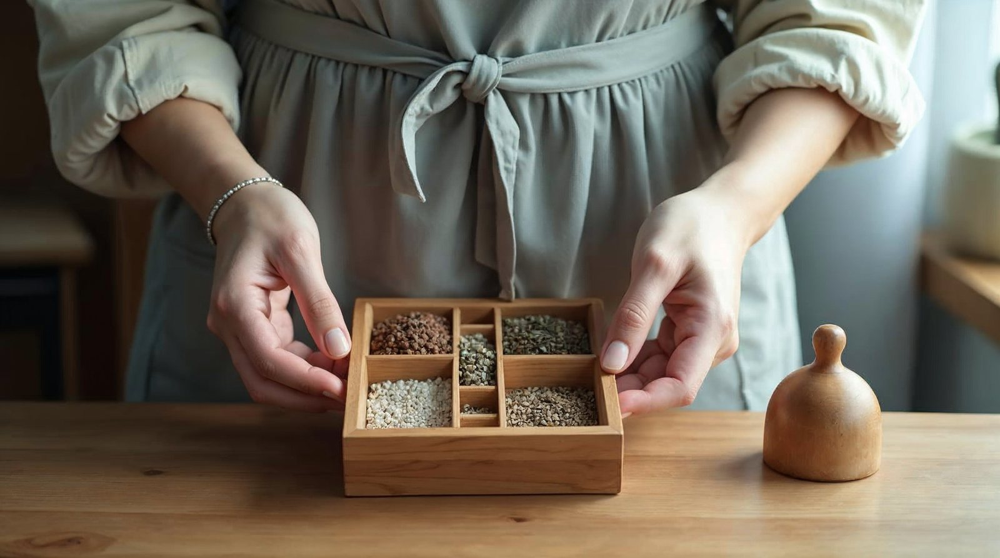

이종호 한의사 감수좋은꿈참사랑한의원 대표원장 (한의사 면허번호 19769)발행 2026-11-22 · 수정 2026-11-26
이 글의 차례
물을 마셔도 갈증이 계속되고 소변까지 늘었다면 내과에서 혈액 검사로 혈당부터 확인해 보는 것이 좋습니다. 단순히 실내가 건조하거나 짠 음식을 먹어서일 수도 있지만, 몸의 상태를 점검하라는 신호일 수도 있습니다. 갈증과 함께 체중이 줄거나 심하게 피곤하다면 한의원보다 내과 검사가 먼저입니다.
왜 이런 불편이 생길 수 있나요
- 혈당이 높으면 소변이 늘고 그만큼 갈증이 생길 수 있어 가장 먼저 확인할 부분입니다.
- 짠 음식, 카페인, 술은 갈증을 키우거나 몸의 수분을 빼앗을 수 있습니다.
- 난방으로 실내가 건조하거나 입으로 숨을 쉬면 입이 쉽게 마릅니다.
- 일부 약은 입 마름이나 갈증을 일으킬 수 있습니다.
먼저 이렇게 여쭙니다
- 갈증이 언제부터 늘었고, 하루 물 마시는 양은 어느 정도인가요?
- 소변 횟수나 양이 늘었나요? 밤에도 소변 때문에 깨나요?
- 단 음료나 카페인을 자주 마시나요?
- 체중이 이유 없이 줄거나 피곤함이 심해졌나요?
- 최근 새로 먹기 시작한 약이 있나요?

일상에서 먼저 해 볼 수 있는 것
- 단 음료 대신 물이나 보리차를 조금씩 나눠 마시기
- 짠 음식과 카페인, 술이 갈증을 키우는지 기록해 보기
- 실내가 너무 건조하지 않게 하기
- 마신 양과 소변 횟수를 며칠 메모하기
- 최근 건강검진 결과지에서 공복혈당 항목 찾아보기

한의원에서 함께 살필 수 있는 경우
- 혈당 검사에서 큰 이상은 없다고 들었지만 입이 자주 마르는 경우, 땀과 소변, 소화 상태를 함께 살핍니다.
- 갈증과 함께 몸이 덥고 잠이 얕은 경우, 몸의 열감과 잠의 모양을 함께 살핍니다.
- 식사가 불규칙하고 단 음료를 자주 찾는 경우, 식사 리듬과 생활 습관을 함께 살핍니다.
좋은꿈참사랑한의원에서는 갈증의 시간대와 소변, 체중 변화를 먼저 여쭙고, 필요하다고 판단될 때 당화혈색소 검사로 최근 혈당 흐름을 확인합니다. 진맥·설진으로 몸의 열감과 마름을 살핀 뒤 상태에 맞춰 침이나 한약 상담 등을 정하며, 당뇨가 의심되면 진단과 치료를 위해 내과 진료를 먼저 안내합니다.
이렇게 기록해 오시면 상담이 쉬워집니다
- 하루 동안 마신 물과 음료의 양
- 낮과 밤의 소변 횟수
- 최근 몇 달 사이 체중 변화
- 건강검진 결과지와 복용 중인 약
이런 증상은 먼저 확인이 필요합니다
- 갈증과 잦은 소변, 이유 없는 체중 감소가 함께 있는 경우
- 심한 피로나 시야 흐림이 갈증과 함께 있는 경우
- 당뇨 가족력이 있으면서 갈증이 갑자기 심해진 경우
- 구토나 복통이 있거나, 입에서 과일 같은 냄새가 나거나, 정신이 흐려지는 느낌이 드는 경우
갈증과 잦은 소변이 심하면서 체중이 빠르게 줄거나, 구토·복통, 과일 같은 입 냄새, 정신 흐림이 함께 있으면 한의원 진료를 기다리지 말고 가까운 응급실을 이용하세요. 그 밖의 신호는 내과에서 혈액 검사로 먼저 확인해 보세요. 복용 중인 약은 처방한 의사와 상의 없이 줄이거나 끊지 않습니다.

여쭙는 것
- 갈증이 언제부터 늘었고, 하루 물 마시는 양은 어느 정도인가요?
- 소변 횟수나 양이 늘었나요? 밤에도 소변 때문에 깨나요?
- 단 음료나 카페인을 자주 마시나요?
생활에서 해 볼 것
- 단 음료 대신 물이나 보리차를 조금씩 나눠 마시기
- 짠 음식과 카페인, 술이 갈증을 키우는지 기록해 보기
- 실내가 너무 건조하지 않게 하기
한의원에서 함께 살필 것
- 혈당 검사에서 큰 이상은 없다고 들었지만 입이 자주 마르는 경우, 땀과 소변, 소화…
- 갈증과 함께 몸이 덥고 잠이 얕은 경우, 몸의 열감과 잠의 모양을 함께 살핍니다.
- 식사가 불규칙하고 단 음료를 자주 찾는 경우, 식사 리듬과 생활 습관을 함께 살핍니다.
먼저 확인이 필요한 신호
- 갈증과 잦은 소변, 이유 없는 체중 감소가 함께 있는 경우
- 심한 피로나 시야 흐림이 갈증과 함께 있는 경우
- 당뇨 가족력이 있으면서 갈증이 갑자기 심해진 경우
한눈에 보는 표
| 구분 | 핵심 |
|---|---|
| 여쭙는 것 | 갈증이 언제부터 늘었고, 하루 물 마시는 양은 어느 정도인가요? 소변 횟수나 양이 늘었나요? 밤에도 소변 때문에 깨나요? |
| 생활에서 해 볼 것 | 단 음료 대신 물이나 보리차를 조금씩 나눠 마시기 짠 음식과 카페인, 술이 갈증을 키우는지 기록해 보기 |
| 한의원에서 함께 살필 것 | 혈당 검사에서 큰 이상은 없다고 들었지만 입이 자주 마르는 경우, 땀과 소변, 소화 상태를 함께 살핍니다. 갈증과 함께 몸이 덥고 잠이 얕은 경우, 몸의 열감과 잠의 모양을 함께 살핍니다. |
| 먼저 확인이 필요한 신호 | 갈증과 잦은 소변, 이유 없는 체중 감소가 함께 있는 경우 심한 피로나 시야 흐림이 갈증과 함께 있는 경우 |
자주 묻는 질문
갈증이 있으면 바로 당뇨인가요?
그렇게 단정할 수는 없지만 혈당 확인이 필요한 경우가 있어 검사를 권합니다.
한의원에서도 혈당을 확인하나요?
필요하다고 판단될 때 당화혈색소를 확인할 수 있습니다. 진단과 약 조절은 내과에서 하도록 안내합니다.
물을 많이 마시면 해결되나요?
원인에 따라 달라서 양을 늘리기 전에 원인을 먼저 확인하는 것이 좋습니다.
한의원에서는 무엇을 살피나요?
갈증의 시간대, 식사와 잠, 땀과 소변, 소화 상태를 함께 여쭙고 생활 전체를 살핍니다.
좋은꿈참사랑한의원은 재진 때 지난번 이야기부터 이어서 여쭙니다. 진료시간과 예약은 오시는 길에서 확인하세요.
어디서 상담받을 수 있나요?
좋은꿈참사랑한의원은 서울 동작구 만양로2길 2 신성빌딩 3층·5층(서울 동작구 상도동, 7호선 상도역 3번 출구 근처)에 있습니다. 한의사 3명(이종호 대표원장, 조영기 수석진료원장, 정원영 진료원장)이 진료합니다. 진료시간은 평일 09:30~20:00(점심 13:00~14:00), 토·일·공휴일 09:30~15:00이며, 방문 전 전화로 확인을 권합니다. 예약은 네이버 예약, 카카오톡 상담, 전화 02-815-7510로 받습니다.
이 글은 일반적인 건강 정보이며 개인의 진단이나 치료를 대신하지 않습니다. 증상이 있거나 복용 중인 약이 있다면 진료를 통해 확인하세요. 치료 효과는 개인마다 다를 수 있습니다.
작성 기준: 일반적으로 알려져 있는 건강 정보를 참고해 정리했습니다(대표원장 감수). 증상 기록은 1~2주 동안 하루 1회, 비슷한 시간에 적어 오시면 지난 상태와 비교하기 쉽습니다.